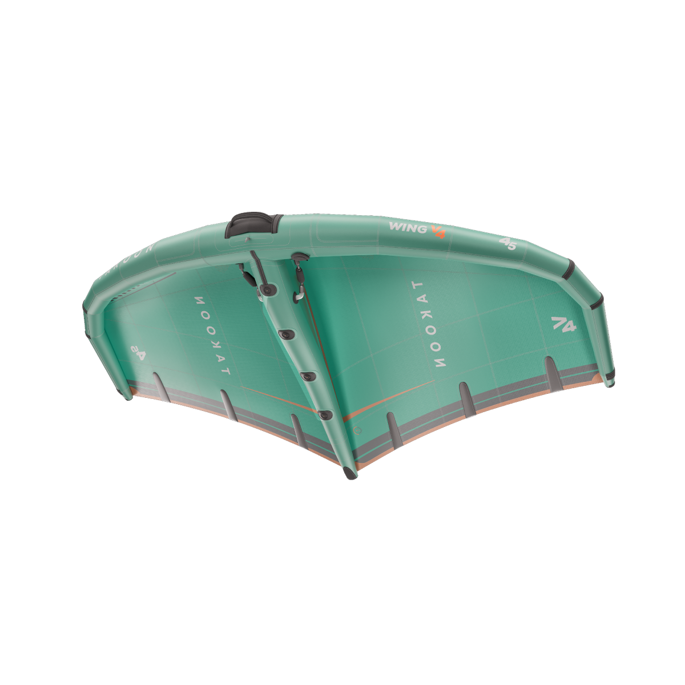

Takoon / 윙
Wing V4
입문부터 즐기는 프리라이드·웨이브 윙
본사는 입문자부터 숙련자까지 프리라이드와 웨이브 용도로 안내합니다. 가벼운 조작감과 안정성을 중심으로 선택하는 윙입니다.
직물 핸들 기본 구성 · 싱글 붐 +226,000원 · 투바 핸들 +183,000원
₩1,000,000부터
이 제품 구매 문의 ↗사양표 확인 ↓부가세 포함 판매가 · 재고와 입고 일정은 구매 상담에서 안내
QUICK GUIDE
선택 전에 알아둘 점
- 핸들·Boom V2·리시는 별도 옵션
- 주 사용 풍속과 체중으로 면적 선택
본사는 입문자부터 숙련자까지 프리라이드와 웨이브 용도로 안내합니다. 가벼운 조작감과 안정성을 중심으로 선택하는 윙입니다.
영상으로 살펴보기
본사 상세페이지에서 소개한 영상 · 음성 및 자막 언어는 영상마다 다릅니다
SPECIFICATIONS
사이즈와 세부 사양
가로로 긴 표는 옆으로 스크롤할 수 있습니다.
| 항목 | 정보 |
|---|---|
| 본사 옵션 | 2.5 / 3.0 / 3.5 / 4.0 / 4.5 / 5.0 / 5.5 / 6.0 |
| — | 55 kg | 65 - 75 kg | 75 - 85 kg | 90+ kg |
|---|---|---|---|---|
| 윙 1개 구성 | 4m | 5m | 5.5m | 6m |
| 윙 2개 구성 | 3m / 4.5m | 4m / 5.5m | 4.5m / 6m | 5m / 6m |
| 윙 3개 구성 | 2.5m / 4m / 5m | 3m / 4.5m / 5.5m | 3m / 4.5m / 6m | 3.5m / 5m / 6m |
| Boom V2 950 | Wing V4 2.5m / 3m / 3.5m / 4m / 4.5m |
|---|---|
| Boom V2 1010 | Wing V4 5m / 5.5m / 6m |
| Wing V4 | 2.5 | 3 | 3.5 | 4 | 4.5 | 5 | 5.5 | 6 |
|---|---|---|---|---|---|---|---|---|
| 스팬 (m) | 2.35 | 2.58 | 2.79 | 2.98 | 3.16 | 3.33 | 3.35 | 3.46 |
| 코드 (m) | 1.38 | 1.5 | 1.63 | 1.74 | 1.85 | 1.9 | 2.13 | 2.17 |
| 중량 (kg) | 1.68 | 1.86 | 2 | 2.14 | 2.3 | 2.36 | 2.58 | 2.72 |
| 핸들 | 종류 | 중량 (g) |
|---|---|---|
| 앞 | 소프트 | 92 |
| — | 카본 | 110 |
| 뒤 | 소프트 | 92 |
| — | 카본 | 100 |
| Boom V2 | 카본 | 300 |
본사 공개 표기 기준입니다. 빈칸은 본사가 수치를 안내하지 않은 항목이며, 연식·옵션별 실제 구성과 사이즈는 상담에서 확인합니다.
원문과 확인 기준
한국어 설명은 본사 내용을 요약했습니다. 추천 순서는 DMJ 기준입니다. 확인일: 2026-09-24
본사 원문 보기 ↗직물 핸들 기본 구성 가격표
| 옵션 | 판매가 |
|---|---|
| 2.5 | ₩1,000,000 |
| 3.0 | ₩1,040,000 |
| 3.5 | ₩1,070,000 |
| 4.0 | ₩1,110,000 |
| 4.5 | ₩1,150,000 |
| 5.0 | ₩1,200,000 |
| 5.5 | ₩1,220,000 |
| 6.0 | ₩1,250,000 |
사이즈별 권장 풍속
체중 75kg 라이더와 중간 크기 보드를 기준으로 한 본사 참고 범위입니다
| 윙 사이즈 | 풍속 · 노트 | 풍속 · m/s |
|---|---|---|
| 3㎡ | 25–40 kt | 12.9–20.6 |
| 3.5㎡ | 20–38 kt | 10.3–19.5 |
| 4㎡ | 17–35 kt | 8.7–18.0 |
| 4.5㎡ | 15–30 kt | 7.7–15.4 |
| 5㎡ | 12–28 kt | 6.2–14.4 |
| 5.5㎡ | 10–25 kt | 5.1–12.9 |
| 6㎡ | 8–22 kt | 4.1–11.3 |
실제 적정 사이즈는 체중과 실력, 보드·포일, 돌풍과 수면 상태에 따라 달라집니다
2.5㎡는 본사 풍속표에 수치가 없어 별도 상담으로 안내합니다
타쿤 공식 풍속표 출처 ↗